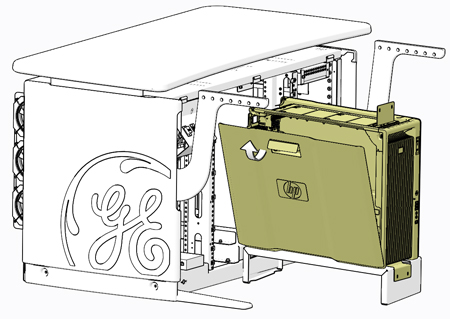
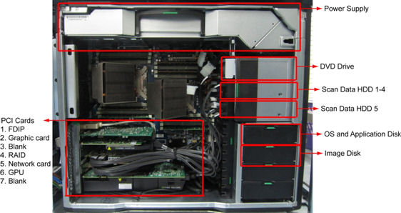
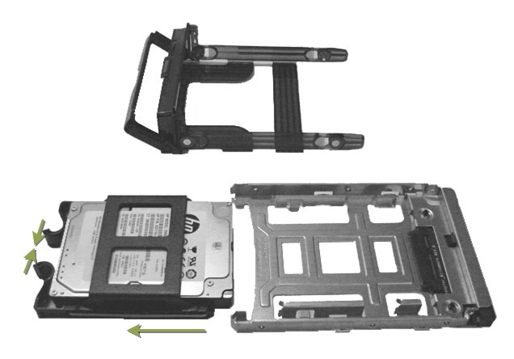

Operating Documentation
Direction 5193574-800, Rev# 22
LightSpeed 7.X Service Methods
Module Version 2.0, Version Date 12/17/13
Operating Documentation |
| Required Persons | Preliminary Reqs | Procedure | Finalization |
|---|---|---|---|
| 1 | Not Applicable | 30 mins | Not Applicable |
This procedure shall be followed when replacing the System or Image hard drive in a Z820 computer.
| Last Revised: | December 17, 2013 |
| Item | Qty | Effectivity | Part# | Manufacturer | |
|---|---|---|---|---|---|
| Standard FE Toolkit | 1 | - | - | - | |
| Item | Qty | Effectivity | Part# | Manufacturer |
|---|---|---|---|---|
| Ty-Raps® (Cable Ties) | As Required | - | - | - |
| Item | Qty | Effectivity | Part# | Manufacturer | |
|---|---|---|---|---|---|
| OS Disk - Hard Disk Drive, 300GB, SAS 10K RPM | 1 | - | 6450000-100 | Seagate ST9300605SS | |
| Image Disk - Hard Disk Drive , 300GB SAS 10K RPM | 1 | - | 6450000-100 | Seagate ST9300605SS | |
| ||||
TO PREVENT DAMAGE TO COMPONENTS WITHIN THE Z820, OBSERVE THE
FOLLOWING ESD PRECAUTIONS:
FOR FURTHER INFORMATION REGARDING ESD PROTECTION, REFER TO THE SAFETY CHAPTER IN THIS PUBLICATION. | ||||
| ||||
| IN ORDER TO MEET EMC REQUIREMENTS, THE CHASSIS MODULES MUST BE PROPERLY INSTALLED AFTER SERVICING. CHECK THAT THE MODULES ARE MOUNTED FIRMLY IN PLACE AND LOCKED DOWN WHERE APPLICABLE. | ||||
| ||||
| FOLLOW ALL REQUIRED SAFETY AND PPE PROCEDURES CUSTOMARY FOR YOUR ORGANIZATION WHEN WORKING ON THIS PRODUCT. | ||||
| Condition | Reference | Effectivity |
|---|---|---|
Only trained service personnel should service the GE Scanner. | - | - |
Shutdown system. Select one of the following methods to Power OFF the Console:
If Applications are up, click on the [Shut Down] button on desktop display and select [Shutdown].
If Applications are down, open a Terminal Window. Type: halt , then press [ENTER].
When halt command has finished, power Off the console at the front panel switch.
Apply LOTO. See Equipment Service - Lockout-Tagout-PPE procedure.
Remove Keyboard Tabletop, Front and Rear covers from GOC6.6 console.
Refer to Replacement → Console (GOC6.6) → Console Cover Removal and Installation.
Remove the Z820 computer from the GOC6.6 console chassis.
Refer to Replacement → Console (GOC6.6) → GOC6.6 VCT Host Computer (Z820) Replacement
Open the Z820 computer side access panel.
Illustration 1: Z820 Side Access Panel Removal

Locate System or Image Hard Drive FRUs by referencing the Illustrations below.
Illustration 2: Z820 Airflow Guide and Expansion Card Support

Remove the original Hard Drive assembly from the computer’s drive bay.
Remove the 2.5 to 3.5 inch Form Factor Adapter Bracket with Hard Drive from the Hard Drive carrier rails. See Illustration 3.
Remove the 2.5 to 3.5 inch Form Factor Adapter Bracket from Hard Drive and set Hard Drive aside. See Illustration 3.
Install replacement Hard Drive into the original 2.5 to 3.5 inch Form Factor Adapter Bracket removed from original Hard Drive.
Install replacement Hard Drive with Form Factor Adapter Bracket into original Hard Drive carrier rails.
Illustration 3: Hard Drive Form Factor Brackets and Carrier Rail Assembly

Install the replacement Hard Drive assembly into the computer drive bay.
Close Side Access Panel.
Fully slide the Z820 computer back into the console chassis, until mounting brackets are flush against the console chassis.
Remove and store the Service Platform.
Install and torque the four (4) 3mm socket cap screws that mount the Z820 computer in the GOC6.6 console.
| NOTE: | Torque each the for (4) 3mm socket cap mounting screws
to:
|
Reconnect all cables removed earlier to the Z820 computer.
Remove LOTO on console.
Perform a Load From Cold (LFC).
Refer to Software (GOC6.6) Software Installation Procedures (LFC)(13HW31.x) Load From Cold procedure
| NOTE: | When a hard disk drive, which was previously used in a RAID volume, is reused ads system or image disk, clearing the configuration information in the hard disk drive is required. |
Install console covers and Keyboard Tabletop assembly.
Refer to Replacement → Console (GOC6.6) → Console Cover Removal and Installation Procedure.
Perform the Functional Checks → System Scanning Test instructions from the procedure list.